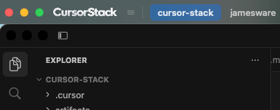
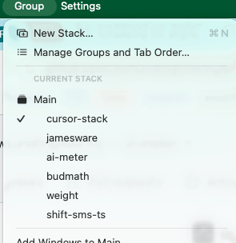
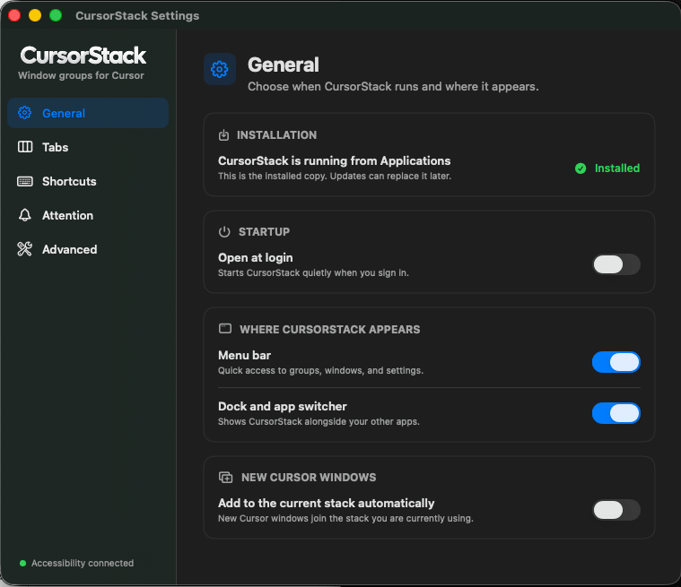
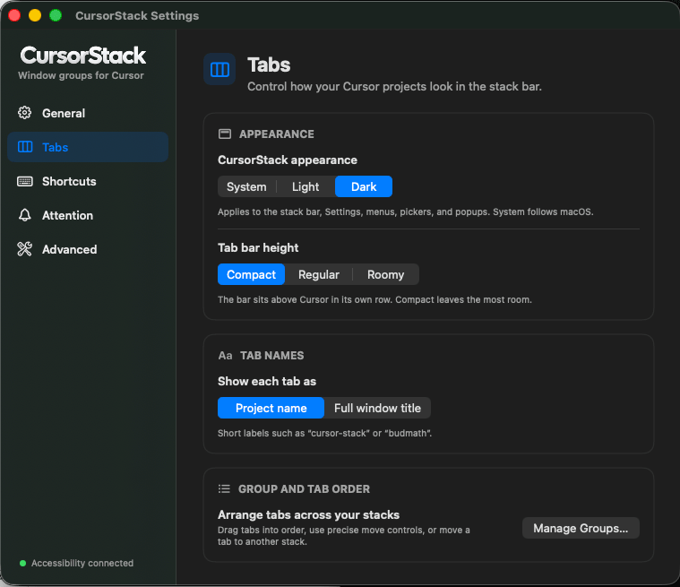
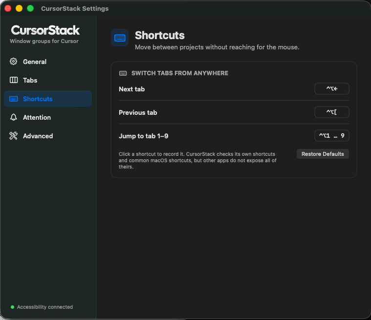
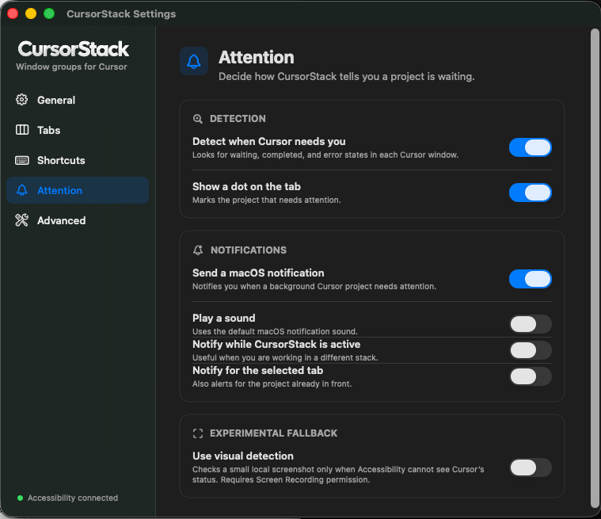
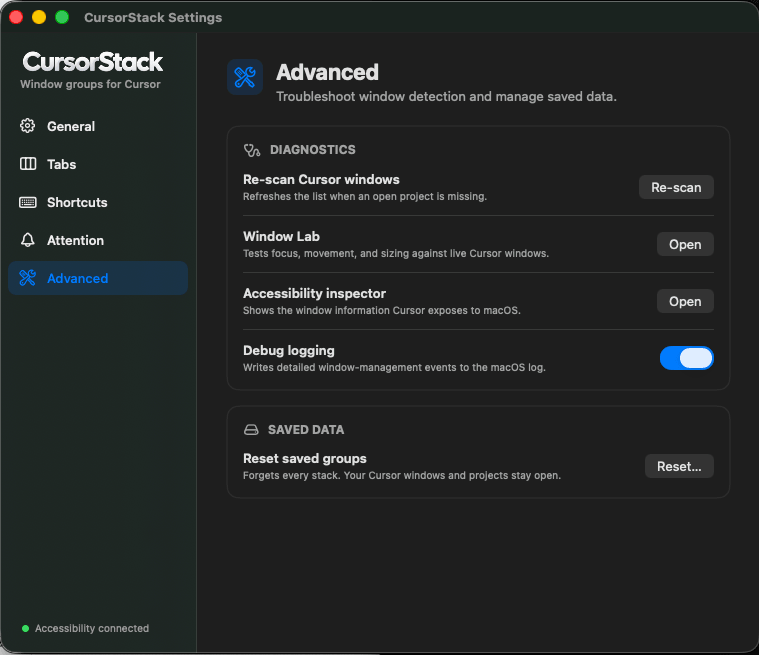
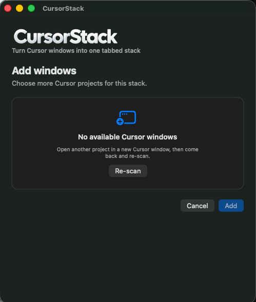
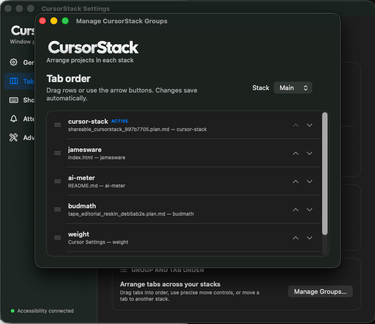

JamesWare · macOS utility
CursorStack
Group Cursor windows into a logical tabbed stack. Real windows. A tab strip on top.

Problem
Cursor opens a window per project. Mission Control and the Dock do not make a stack of related windows feel like tabs. You end up hunting.
What it does
A native macOS utility that groups real Cursor windows under a dedicated tab strip. It does not embed Cursor. It aligns the live windows and lets you switch, jump, and reconnect them.
Why it exists
Tabs for the windows you already have. Not another browser. Not a fake IDE chrome.
Look
The stack

Settings







1 / 7 · General
Capabilities
- Groups persist in
~/Library/Application Support/CursorStack/ - Tab strip sits above Cursor’s native titlebar so search stays usable
- Menu bar icon and picker to create a group
⌃⌥ ]/⌃⌥ [next and previous tab;⌃⌥ 1–9jump- Drag a tab onto another group’s strip to move it
- Dashed tabs for saved windows that need Reconnect after Cursor restarts
- Green traffic light fills the current display work area — not a macOS Space
- Launch at login, menu bar icon, optional Dock icon
- Attention is best-effort: Accessibility, then titles, then optional visual capture
How it works
Accessibility window control. Not App Sandboxed — that API cannot run inside Apple’s sandbox, so this cannot ship on the Mac App Store. Clicking another app hides the strip like a normal window. The red close button quits CursorStack; Cursor windows stay open. Nothing is uploaded. No account. The only network request is Sparkle checking the public GitHub release feed for updates.
Current state
1.0. Open source under MIT. Signed, notarized builds on GitHub Releases for Apple silicon, macOS 14+. Sparkle checks that feed for updates. Optional Notifications. Optional Screen Recording for experimental visual attention. Not on the Mac App Store.